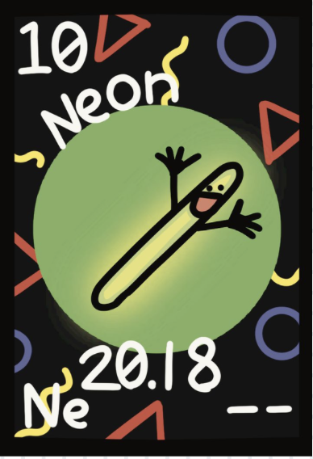

Atomic Number : 10
Atomic Mass : 20.18
Proton Number : 10
Neutron Number : 10
Category : Noble Gas / Non - Metal
Neon was discovered in 1898 by British chemists Sir William Ramsay and Morris Travers. They discovered neon while studying liquefied air and separating its different gases. When an electric current was passed through the new gas, it produced a bright reddish-orange glow. The name neon comes from the Greek word “neos,” meaning “new.” Neon quickly became useful in lighting and advertising because of its distinctive bright glow. Today, neon is used in signs, lighting, lasers, and some scientific and technological applications.
State at room temperature: Gas Colour: Colourless Odour: Odourless Taste: Tasteless Density: 0.9002 g/L Melting point: −248.59°C Boiling point: −246.08°C Solubility: Slightly soluble in water Molecular form: Exists as single Ne atom
Neon is a very unreactive noble gas. It has a complete outer electron shell, making it chemically stable. Neon does not normally react with oxygen, water, or most other elements. It does not easily form chemical compounds under normal conditions. Neon is non-flammable and does not support combustion. Neon remains chemically stable at room temperature. When an electric current passes through neon gas, it produces a bright reddish-orange light.
Neon is a rare element found naturally in Earth's atmosphere. It makes up only a very small amount of the air. Neon is also found in small amounts in the atmosphere of other planets and in stars. On Earth, neon is obtained mainly by cooling and separating liquefied air. Because neon is chemically unreactive, it does not usually form compounds with other elements. Neon is much less abundant on Earth than gases such as nitrogen and oxygen.
Neon is a useful element and is used in several different areas. It is used in advertising signs because it produces a bright reddish-orange glow when an electric current passes through it. Neon is also used in some indicator lamps and high-voltage equipment. It is used in certain types of lasers, including helium-neon lasers. Neon can be used in specialized lighting and scientific instruments. Liquid neon can also be used as a cryogenic refrigerant for some low-temperature applications. Because neon is chemically stable and produces a distinctive glow, it is especially useful in lighting, signs, lasers, and scientific equipment.


Neon is the tenth element on the periodic table and has the symbol Ne. Neon is a noble gas and is extremely unreactive. Neon produces a bright reddish-orange glow when an electric current passes through it. The name neon comes from the Greek word “neos,” meaning “new.” Neon is one of the rarest elements in Earth's atmosphere. Neon has 10 protons and 10 electrons in a neutral atom. Neon has a complete outer electron shell with 8 valence electrons. Neon was discovered in 1898 by William Ramsay and Morris Travers while studying liquefied air.